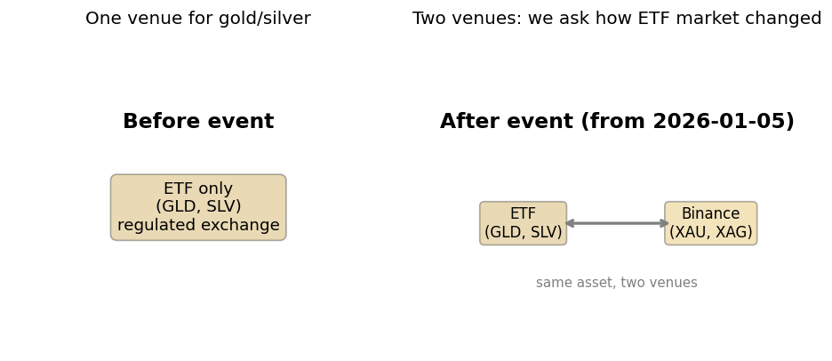
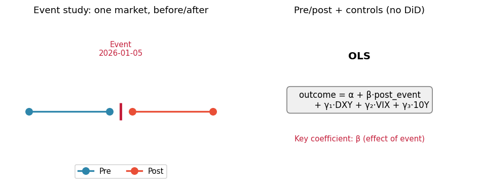
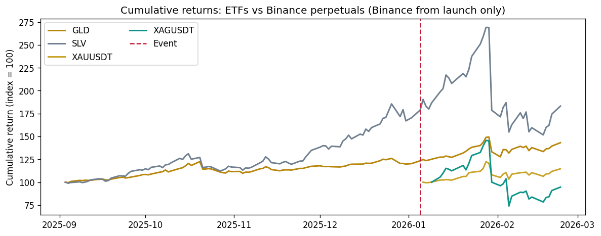
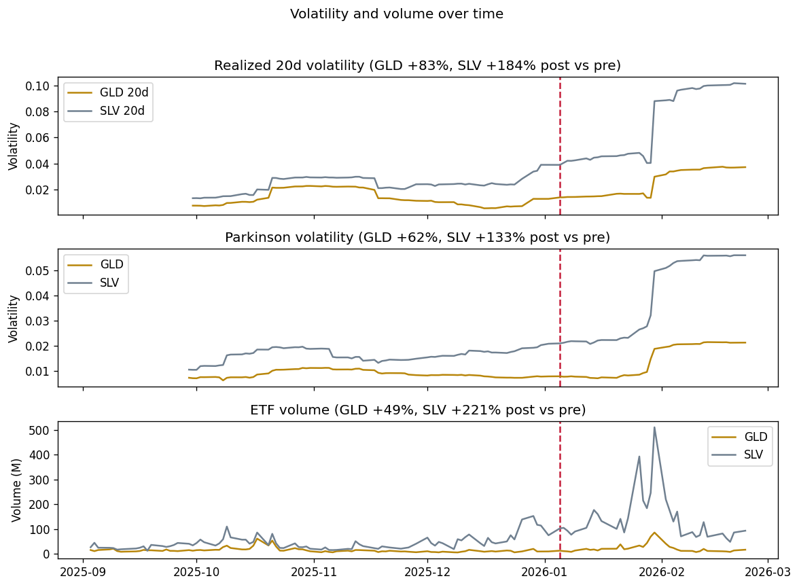
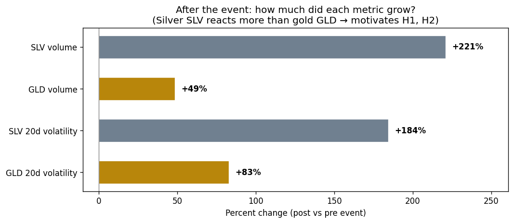
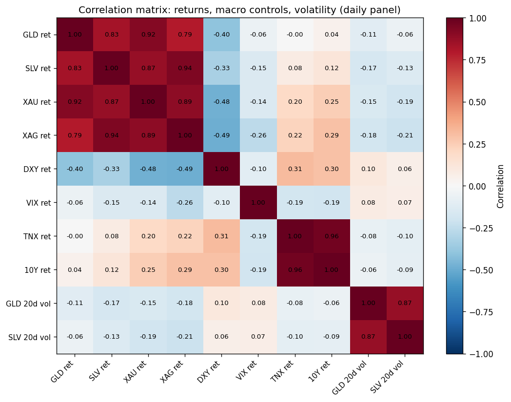
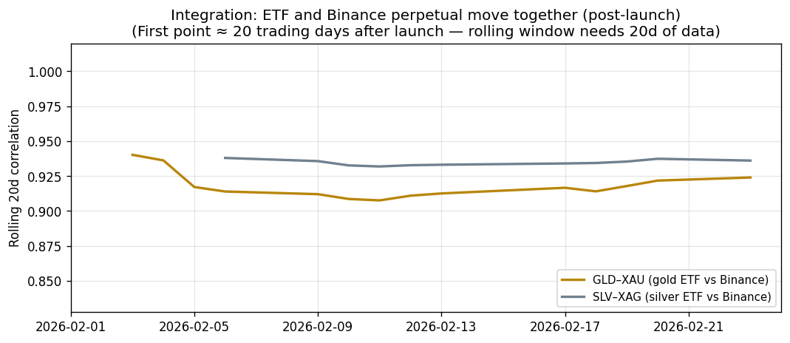

Event study: impact on volatility, liquidity, and integration
Did the introduction of Binance TRADFI gold and silver perpetual futures (XAUUSDT, XAGUSDT) change:
Event: launch date 2026-01-05.
Gold and silver are traded as ETFs (GLD, SLV) on regulated exchanges. In early 2026, Binance started listing perpetuals on the same assets (XAUUSDT, XAGUSDT). So now there are two places to get exposure to the same thing.
We ask: did the ETF market change after that? More volatile? More trading? More linked to the new venue? This matters for traders, market-makers, and regulators.

"The introduction of derivatives can change spot markets—volatility, liquidity, and how prices move together."
Augustin, Rubtsov & Shin (2023), Management Science — Bitcoin futures and spot markets.
| Source | What we get | Frequency | Rows | Note |
|---|---|---|---|---|
| Binance API | XAUUSDT, XAGUSDT (OHLCV), funding, OI (TRADIFI_PERPETUAL) | 1m | 67k+ | From 2026-01-05 (XAU), 2026-01-07 (XAG) |
| Yahoo Finance | ETFs: GLD, SLV, IAU, GDX, SIL. Controls: DXY, VIX, TNX. GLD/SLV 1m | Daily; 1m last 7d | 118 daily; 1m limited | 1m only last ~7 days |
| FRED | DGS10 — 10Y Treasury rate (macro control) | Daily | in daily panel | Same role as TNX, from Fed data |
Panels: Daily = 118 rows (event study, OLS). 1-minute = 67k+ rows (intraday analysis). Integration: post-event only (rolling corr, beta; no Binance before 2026-01-05).
DXY = dollar index; VIX = volatility index; TNX / DGS10 = 10Y yield (Yahoo / FRED). Used as controls.
post_event and controls (DXY, VIX, 10Y).
Design: Event study with pre/post comparison. No control group → we do not use difference-in-differences.
Tests: (1) Welch t-tests (pre vs post); (2) OLS with outcome = volatility or liquidity, regressor = post_event + controls (DXY, VIX, 10Y). HAC (Newey–West) SE; winsorization 5%/95%.
Why controls? DXY (dollar), VIX (volatility index), 10Y yield (Yahoo TNX / FRED DGS10) capture general market conditions. By including them in OLS, the coefficient on post_event measures the effect of the listing itself, not just “the market moved”—so we can argue that the change in ETF volatility/volume is due to the Binance launch, not confounded by macro.
Literature: Augustin et al. (2023), Management Science — impact of Bitcoin futures on spot; they use DiD with treatment/control. We have a single market before/after, so we use pre/post + OLS with controls. See Literature/LITERATURE_METHODS.md.

On the chart, higher line = higher cumulative return: silver (SLV, XAGUSDT) outperforms gold (GLD, XAUUSDT) in this sample. After the event, all four series move together—that co-movement is the first visual evidence of integration between ETF and Binance markets.

Volatility and volume dynamics around the event—basis for H1 and H2. Silver (SLV) reacts more strongly: post-event, both realized and Parkinson volatility, and ETF volume, rise more for SLV than for GLD.

One chart, one message: after the event, volatility and volume increase (positive %); silver (SLV) increases more than gold (GLD). Same units (%) make the comparison clear. Below we test whether these changes are statistically significant (t-test) and then control for macro in regressions.
T-test: For each metric we test H₀: mean(post) = mean(pre) with a two-sample Welch t-test (unequal variances): we take all pre-event days and all post-event days, compute the two means, and the test gives us t (how many standard errors the difference is) and p (probability of such a difference under H₀). Low p (e.g. p < 0.05) → reject H₀ → change is significant. Shown as <0.001 when p is below 0.001.

What it shows: Pairwise correlations between the main variables we use: ETF returns (GLD, SLV), Binance perpetual returns (XAU, XAG), macro controls (DXY, VIX, 10Y/TNX), and realized volatility (GLD 20d, SLV 20d). Red = positive, blue = negative. High correlation between GLD and XAU (and SLV and XAG) in the post-event overlap supports integration; macro variables help us control for common factors in regressions.

What the chart shows: Rolling 20‑day correlation between ETF returns and Binance perpetual returns (GLD–XAU, SLV–XAG). We have data only after the launch; the first point appears ≈20 trading days after the event (rolling window needs 20 days). Values near 0.9–1.0 mean the two venues move in lockstep → one price-discovery process, arbitrage and hedging link them. We cannot test “integration increased” because we have no pre-event Binance data; we describe the post-event level.
Key result: Positive and significant coefficient on post_event in volatility regressions (GLD and SLV) when we control for DXY, VIX, 10Y (from Yahoo and FRED) → H1 supported. So the rise in volatility is attributed to the listing, not to general market moves. Volume higher post-event → H2 supported (direction). The table includes Corr GLD–XAU and Corr SLV–XAG: post-event means only (Pre = —); that is our price-integration data.
Insight: Higher ETF volatility need not mean “chaos”—it can reflect more hedging and informed trading across the two venues.
In short: The listing of Binance gold/silver perpetuals is associated with higher ETF volatility and volume (H1, H2 supported when we control for macro). The two venues move together after the launch—integration is high where we can measure it. So new derivatives on a new venue can shift incumbent markets; the story is similar to Bitcoin futures (Augustin et al.).